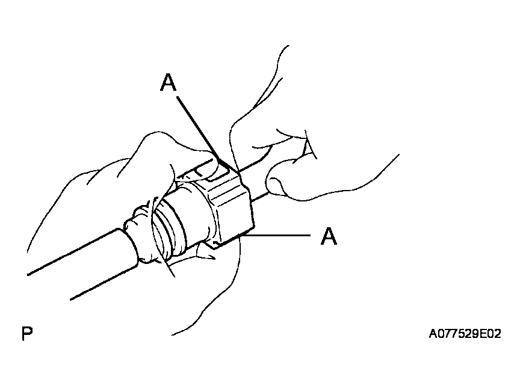
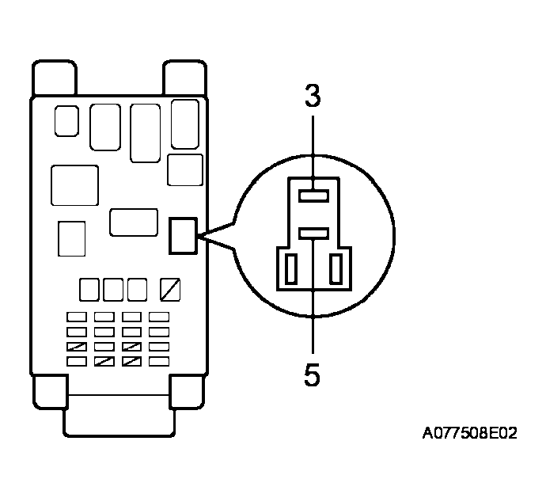

On-Vehicle Inspection
- CHECK FUEL PRESSURE
- Discharge the fuel system pressure and take precautions against possible fuel spray (see REMOVAL ).
- Check that the battery voltage is above 11 V.
- Disconnect the cable from the negative (-) battery terminal.
- Prepare the part number shown below. Remove the connector from the tube.
HINT:
Part No. 23901-22130
- Remove the fuel pipe clamp from the fuel tube connector.
- Disconnect the fuel tube connector from the fuel pipe by pinching part A with your fingers as shown in the illustration.

Courtesy of © TOYOTA, LICENSE AGREEMENT TMS1002CAUTION:- DISCHARGE FUEL SYSTEM PRESSURE procedures must be performed before disconnecting any part of the fuel system,
- After performing the DISCHARGE FUEL SYSTEM PRESSURE procedures, pressure will remain in the fuel line. When disconnecting the fuel line, place a cloth or equivalent over fittings to reduce the risk of fuel spray.
- Install SST (pressure gauge) and the fuel tube connector as shown in the illustration using SST.
SST 09268-41047 (95336-08070), 09268-45014 (09268-41250, 09268-41200, 09268-41220)
- Wipe up any gasoline.
- Reconnect the cable to the negative (-) battery terminal.
- Connect the intelligent tester to the DLC3.
- Measure the fuel pressure.
Standard fuel pressure: 304 to 343 kPa (3.1 to 3.5 kgf/cm 2 , 44 to 50 psi)
If the pressure is greater than the specified range, replace the fuel pressure regulator.
If the pressure is less than the specified range, check the fuel hose connections, fuel pump, fuel filter and fuel pressure regulator.
- Disconnect the intelligent tester from the DLC3.
- Start the engine.
- Check that the fuel pressure remains as specified for 5 minutes after the engine has stopped.
Standard fuel pressure: 147 kPa (1.5 kgf/cm 2 , 21 psi)
HINT:
If the pressure is not as specified, check the fuel pump, pressure regulator and/or injectors.
- After checking the fuel pressure, disconnect the negative (-) battery cable and carefully remove SST and the fuel tube connector to prevent fuel spray.
- Reconnect the fuel inlet tube (fuel tube connector).CAUTION: After taking the precautions, connect the fuel tube connector (quick type).
- CHECK FUEL PUMP OPERATION AND CHECK FOR FUEL LEAKS
- When using the intelligent tester:
- Connect the intelligent tester to the DLC3.
- Turn the ignition switch ON and intelligent tester main switch ON.NOTE: Do not start the engine.
- Select the ACTIVE TEST mode on the intelligent tester.
- Please refer to the intelligent tester operator's manual for further details.
- When not using the intelligent tester:
- Remove the circuit opening relay from the instrument panel junction block.
- Using a service wire, connect terminals 3 and 5 of the relay block.

Courtesy of © TOYOTA, LICENSE AGREEMENT TMS1002NOTE: Pay due attention to the terminal connecting position to avoid malfunctions. - Turn the ignition switch ON, and check that the fuel pump operates.NOTE: Do not start the engine.
- Check that there are no fuel leaks after doing maintenance to the fuel system.
- Disconnect the intelligent tester from the DLC3.
- When using the intelligent tester: